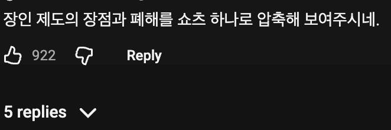
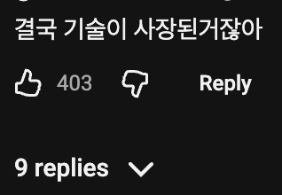

하지만 나의 의지였다!!!
ㄹㅇ 그냥 아재가 취미생활 재밌게 한거 아니야?ㅋㅋㅋㅋ
현대판 고려청자네 ㅋㅋ
대단 하긴 한데
결국은 대량생산 할 기술은 구현 못해서
소수 정예로 개개인 기량에 기대서 기업 운영한거라는거잖아
아니 소수정예로 하는일만 하겠다는거임
덩치커지면 손끝기술보다 다른걸 중시하게 되니까
재무쟁이들이 사장한답시고 뻘짓하는것
많이 봤자너 ㅋ
딱히 문제없는게 규모가 커지면 결국 다른기업+중국기업 와 경쟁하게되니까...
틈새전략을 노렸다는게 맞지않음?
지금도 일본 ㅈ소기업 프레스 공장가도 휴지를 프레스로 찍으면 단면이 칼로 자른것 처럼 깔끔하게 잘리는 수준의 기술이 있는데 이거 한국, 그 외의 어느나라를 가도 이 정도 기술력 없음
당시 오카노공업은 회사를 완전히 매각하거나 청산하는 대신, 자사가 보유한 세계 최고 수준의 금속가공 및 금형 기술을 오랜 협력 회사들에게 무상에 가깝게 전수하거나 양도하는 방식으로 기술을 넘기고 공장 문을 닫았습니다.
이러면 또 내용이 다른데?!
ㄹㅇ 그냥 기술 사라진거잖아;;;
ㅋㅋㅋ ㄹㅇ 결국 소멸이자너